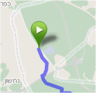
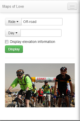
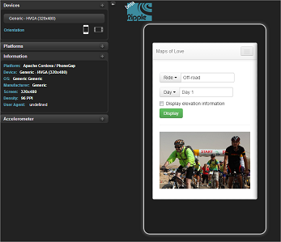
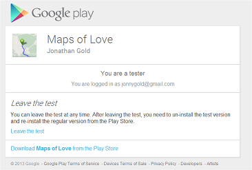

Welcome to the Maps of Love project a cross-platform, maps application for mobile phones and tablets. The app is named after the ALYN Hospital's Wheels of Love International Bike Ride. The ride raises funds for the ALYN Pediatric and Adolescent Rehabilitation Center, in Jerusalem Israel. Each participating rider undertakes to raise money from sponsors on behalf of the hospital. This year marks the rides 14th year. For more information about the ride, see the Alyn Ride home page.
As both a participant in the ride and as a cross-platform, mobile application developer, I wanted to use my skills to publicize the ride, fundraise, and help other riders. I also wanted to create something that others could use as the basis for their own applications. I created this site to act as a central source of information, with links to related sites. I should also add that Maps of Love is not an official Wheels of Love Application. Currently, the Alyn Hospital and the Wheels of Love Ride are not in involved with this project. For current Maps of Love project news, see the Maps of Love blog.
Maps of Love App
The app is designed to provide maps and information regarding each days ride. The apps launch screen lets you choose a ride, (Off-road, On-road, etc.), the day's ride (Day 1 to 5), and display the ride's elevation (optional). After you selected a ride, the app displays a map of the ride. In addition, it also lets you locate your current position, track your ride, and display you a text description. For more information, see the features page.
Maps of Love Code Project
The app is created with cross-platform web technologies including, HTML, CSS, and Javascript. I have open sourced the projects code and made committed it to a GitHub repository. In addition to contributing, editing, or reviewing the code, you can also contribute by improving the design and providing images and icons.
I licensed my source code under the MIT license. In order to provide additional functionality, the app uses a number of open source Javascript libraries and frameworks. These libraries are used in accordance to their respective project licenses. For a complete list, see the technologies page.
Maps of Love in Action
While the app is in a fairly advanced stage of development, it is still not ready for general release; for example, the current version only provides information regarding off-road rides. For testing purposes, I have created an online demo. Although you can run the demo as a web page, it is best viewed using the Chrome web browser and Ripple extension. For more information, see the Maps of Love in Action page.
For Android users, I have uploaded a test version to the Google Play Store
. Contact Information
You can contact me via the following links: @jonnygold on Twitter, Facebook, and Gmail. I also created a Maps of Love Community on Google+.
If you would like to sponsor my participation in the ride, you can send a donation via my Wheels of Love's profile page.